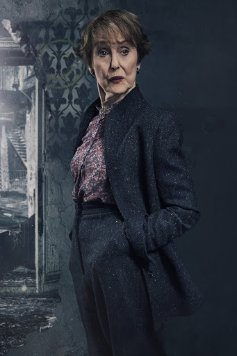

Для выполнения квеста ознакомьтесь и выберите подходящую вам роль. Для этого наведите на карточку и нажмите нужную кнопку. Хотите ознакомиться с этапами квеста? Выберете соответствующий пункт меню или перейдите по ссылке.


Шерлок Холмс
Вы - сыщик, который знает теорию назубок и может помочь любому нуждающемуся. Вам нужно найти ключ шифра и узнать, как им воспользоваться! Также вам достанется еще парочка интересных заданий.
ВЫБРАТЬ РОЛЬ
Доктор Ватсон
Вы - друг Шерлока Холмса и преданный
помощник. Вы помогаете Шерлоку Холмсу в поиске информации, а также сэру Генри, которому могут понадобиться ваши знания. Вы также попытаетесь узнать, насколько серьезна вспышка гриппа в Дартмуре.
ВЫБРАТЬ РОЛЬ
Сэр Генри
Вы - наследник Баскервиль-Холла. Вам
нужно узнать, каким образом ваш дорогой дядя Чарльз зашифровал свои труды. Не пугайтесь, вам
поможет кое-кто еще.
ВЫБРАТЬ РОЛЬ
Майкрофт Холмс
Вы - брат Шерлока, очень умный человек,
который с легкостью возьмет любой интеграл, разберется с построением необычных графиков и напоследок вам может достаться кое-что интересное.
ВЫБРАТЬ РОЛЬ

Миссис Хадсон
Вы очень любите порядок, поэтому наведете
его в любом месте: и в поместье, и даже среди запутанной теории. Думаете, с этим справится Шерлок Холмс? Возможно. Но он очень занятой человек и будет рад вашей помощи.
ВЫБРАТЬ РОЛЬ
Инспектор Лестрейд
Вы – инспектор Скотленд-Ярда и оружейный знаток,
конечно же поможете знаменитому сыщику. Но главная ваша способность
– мастерски составлять презентации и подробно составлять отчет
о ходе этого занимательного дела, который вы вскоре должны предоставить.
ВЫБРАТЬ РОЛЬ